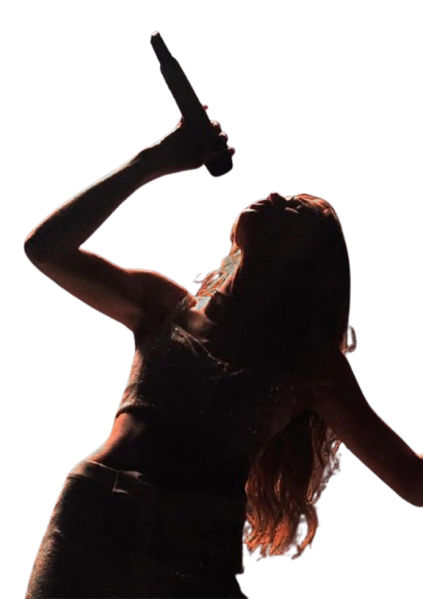

Pande Putu Sandy Aprilyanti
Program Studi Pendidikan Seni Pertunjukan
Pernapasan merupakan proses keluar masuknya udara yang digunakan sebagai sumber tenaga dalam menghasilkan suara.
Dalam teknik vokal terdapat tiga jenis pernapasan.
Pernapasan dada ditandai dengan mengembangnya bagian dada saat menarik napas.
Pernapasan ini kurang efektif karena udara yang ditampung relatif sedikit.
Pernapasan perut ditandai dengan mengembangnya bagian perut saat menarik napas.
Pernapasan ini mampu menampung udara lebih banyak dibandingkan pernapasan dada.
Pernapasan diafragma menggunakan otot diafragma sehingga udara dapat dikontrol lebih stabil dan bertahan lebih lama saat bernyanyi.
Pernapasan ini ditandai dengan mengembangnya otot diafragma dan rongga perut saat mengambil napas.

Metode 4 – 4 – 4
Memberikan kontrol udara yang lebih baik saat bernyanyi.